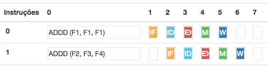
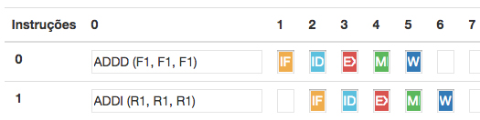
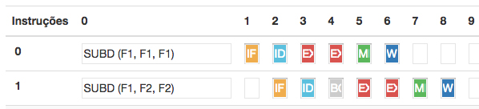
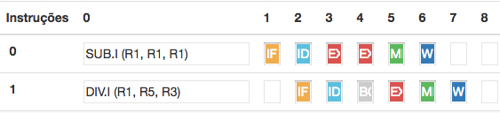
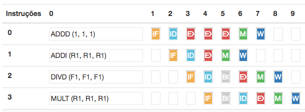

Esta página apresenta alguns testes e exemplificações de uso do simulador
ADDD (F1, F1, F1)
ADDD (F2, F3,F4
ADDD (F1, F1, F1)
ADDI (R1, R1,R1
SUBD (F1, F1, F1)
SUBD (F1, F2,F2)
SUB.I (R1, R1, R1)
DIV.I (R1, R5, R3)
ADDD (1, 1, 1)
ADDI (R1, R1, R1)
DIVD (F1, F1, F1)
MULT (R1, R1, R1)
